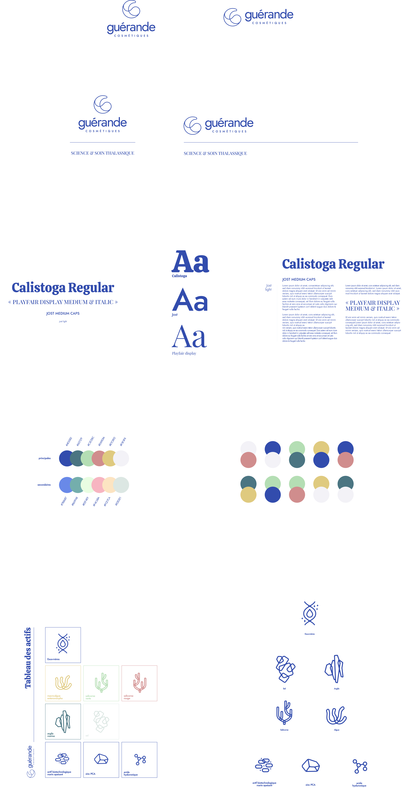
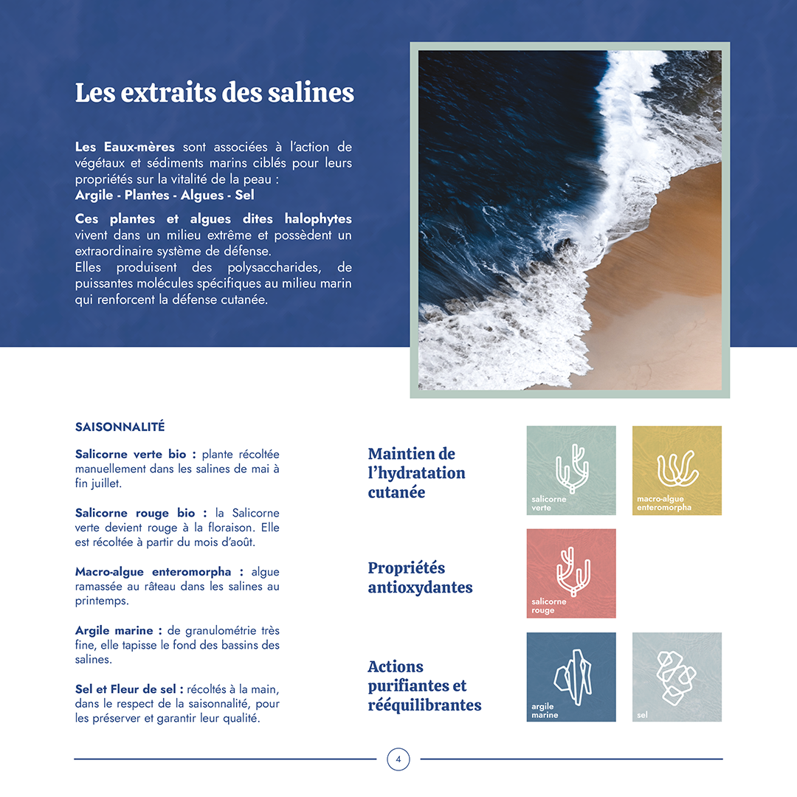
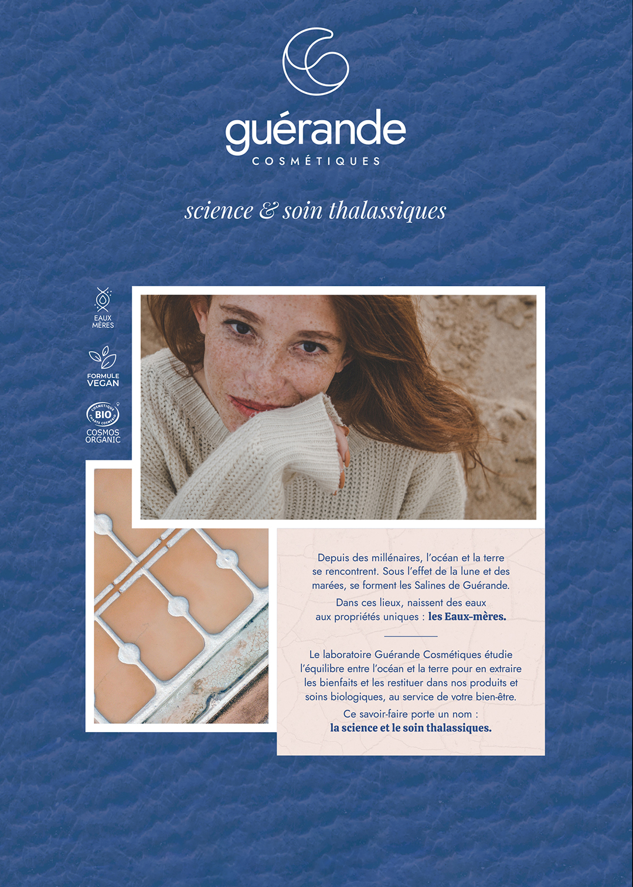
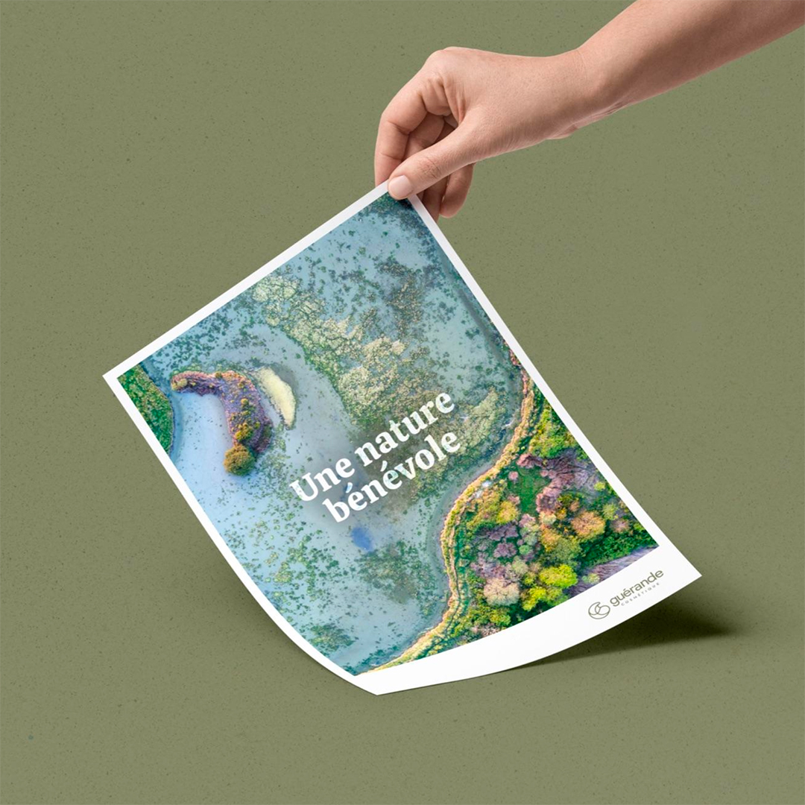
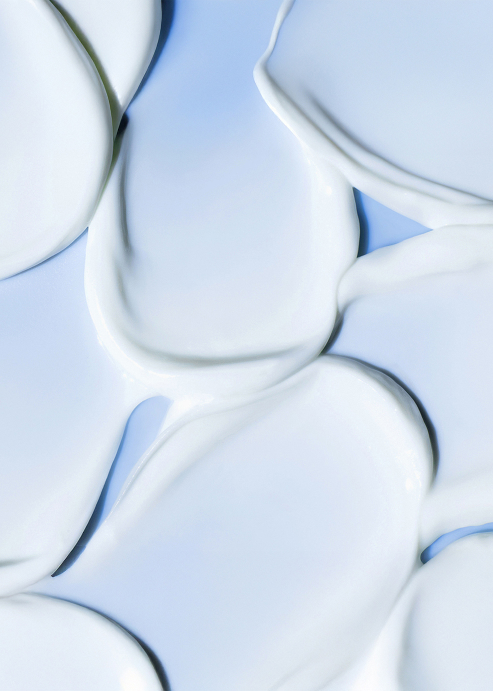
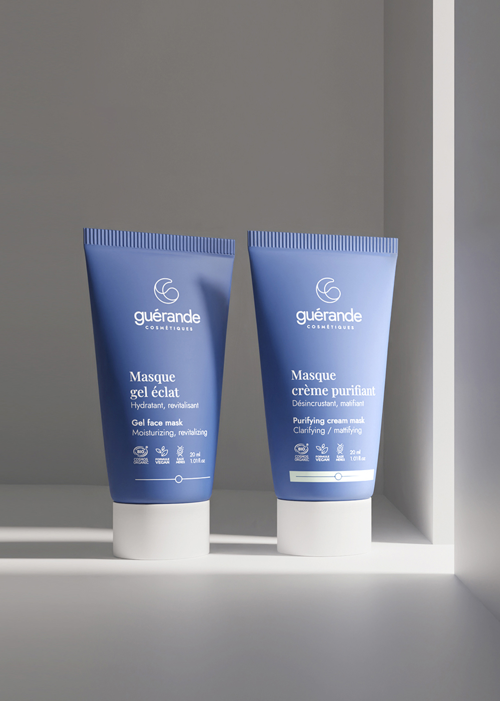

Aux origines des Eaux-Mères
Depuis des millénaires, l'océan et la terre se rencontrent. Sous l'effet de la lune et des marées, se forment les Salines. Dans ces lieux, naissent des eaux aux propriétés uniques.


science & soin thalassiques
Découvrir la vision"Nous ne puisons pas dans la nature, nous collaborons avec elle. Face à sa puissance, nous avons choisi l'humilité et le respect."
Depuis des millénaires, l'océan et la terre se rencontrent. Sous l'effet de la lune et des marées, se forment les Salines. Dans ces lieux, naissent des eaux aux propriétés uniques.

Un voyage chromatique à travers les écosystèmes extrêmes des marais salants, sources de notre inspiration graphique et cosmétique.



Les ressources des salines sont de véritables pépites. Notre laboratoire étudie ces plantes et algues halophytes, qui vivent dans un milieu extrême et développent un système de défense extraordinaire pour protéger la vitalité de votre peau.

Conjuguer l'élégance d'un soin premium avec l'authenticité de la terre craquelée et des engagements écologiques forts.

Expertise anti-âge cellulaire.

-94% de plastique par recharge.

Formules Cosmos Organic & Vegan.

L'expérience thalassique sur la peau.